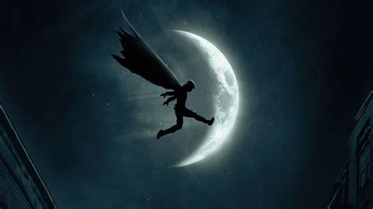
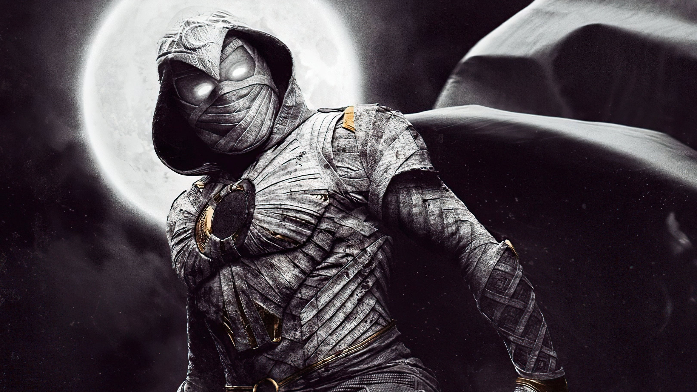

Cavaleiro da Lua
Avatar de Khonshu, o deus egípcio da Lua e da vingança.
Quem é Marc Spector?
Ex-mercenário que, à beira da morte, fez um pacto com o deus Khonshu para se tornar seu avatar na Terra, lutando pela justiça sob a luz da lua.


O Poder de Khonshu
Quanto mais cheia a lua, maior o poder concedido ao seu avatar.